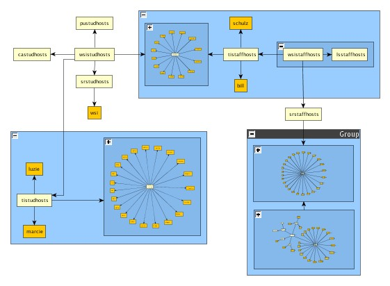

Tutorial source code demo HierarchyDemo exhibits the Nested Graph Hierarchy and the Node Grouping technologies that are a modular part of the yFiles library.
Nested Graph Hierarchy basically provides the possibility to put a graph inside a node which itself is contained in another graph. A node that contains another graph is called an anchor node or a folder node A tree-like hierarchy of graphs will be induced by a nesting of graphs inside of other nodes. The toplevel graph of this hierarchy of graphs is called the root graph. A graph that contains a nested graph is called the parent graph of that nested graph.
Node Grouping complements the Nested Graph Hierarchy technology. It is a feature mainly provided by the viewer component. Nodes of all kind can be put together in a group, that will be visualized by a group node, which will be painted in the background of it's child nodes. In contrast to the Nested Graph Hierarchy technology, all nodes, group nodes and their child nodes reside in the top level graph at the same time. However the view suggests that at all times, child nodes lie within their respective parent group nodes. This makes it possible to connect nodes of different logical hierarchy levels with each other visually.
This application demonstrates the use of these two technologies. Since both of them can be used to describe a hierarchy of nodes, it is possible to simply switch between the two different technologies. The actions that are made accessible through this application can be used to edit the graph/node hierarchy and the visual presentation of the hierarchy.
|  |
A noteworthy feature of the yFiles Nested Graph Hierarchy is that one can move parts of a graph to another level within the hierarchy of graphs. The edges connecting the part that has been moved with the rest of the graph won't get lost though. Original edges will be represented by edges connecting to the node the subgraph is nested in. When unpacking the contents of a node again, the original edges will be restored. Hence the topology of a graph won't be destroyed by a sequence of nesting operations.
HierarchyDemo displays three views of a nested graph hierarchy. On the left there is a classic tree view that shows the complete graph hierarchy and all of the nodes contained within it. The main view of HierarchyDemo displays the graph hierarchy from a specific hierarchy level on downward. The graphs that are nested within folder-nodes are displayed as well. Group nodes look similar to folder-nodes but behave differently. While it is possible to resize and move folder-nodes freely, the position and size of a group-node is induced by the positions and sizes of the child nodes that belong to the respective group. While a folder-node only displays the child nodes it contains, the children of a group node still belong to the graph structure and can be treated like normal nodes. The third view of HierarchyDemo is located above the tree view. It acts as an overview display of the graph that is visualized in the main view.
This section describes which hierarchy-related and grouping-related operations are available within the main view.
By right clicking on the main view a popup menu will become visible. The following menu items manipulate the graph hierarchy or the view on the graph hierarchy:
| Menu Item | Description |
|---|---|
| Group Selection | Selected nodes will be grouped. This is done by creating a new group node and making the selected nodes logically children of the newly created group node. If no nodes are selected, an empty group node will be created. |
| Ungroup Selection | Selected nodes will be ungrouped, i.e. they will become child nodes of the parent of their current parent node. Empty group nodes will not be removed, but stay in the graph structure. |
| Close Group | This action can be invoked on selected group nodes. This will actually switch the node from Node Grouping techology to Nested Graph technology. This can be undone by invoking Open Folder on the closed group node. |
| Create Folder | Creates a new folder node containing an empty graph. |
| Fold Selection | This method folds the subgraph induced by the selected nodes inside a newly created folder node. |
| Unfold Selection | This method moves the subgraph induced by the selected nodes to the parent graph. This operation is only available if the graph displayed in the main view is not the root graph. Otherwise there would be no parent graph to unfold the selection to. |
| Extract Folder | Extract the contents of the folder-node on which the popup menu has been opended upon and remove the then empty folder. |
| Open Folder | Opens the currently selected folder-node, thus transforming it into a group-node. This is the reverse operation of Close Group. |
There are some additional hierarchy-related operations available on the main view that are triggered by mouse gestures.
Double-clicking on a node that is displayed in the tree view transfers the focus of the main view to that node. Focusing a node in the main view involves two things: The nested graph that contains the focused node gets displayed in the main view. And the focused node will be displayed in the center of the view.